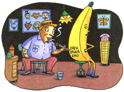

Maybe food really should be shrink-wrapped after all. By Joe Novara
Anthony studied the fruit an d vegetables laid out on the planks of a makeshift roadside stand. He glanced at the money box with the `thank you' card taped on its side and the stack of reusable bags next to it. Then he made a beeline back to my car, slammed the door and turned up the radio. What's happening here, I wondered? I'm Anthony's Big Brother. Once a week I spend the day with him-away from his inner city neighborhood. Our ride in the country was going fine until I stopped for fruit.
"Here. Have some cherries," I offered as we drove away.
Anthony took one look at the crumpled bag of sweet black cherries. "No way," he said. "You don't know where those came from. Besides, what kind of people leave food out in front of their house and expect you to pay for it on your honor?"
We rode in silence for a while. I knew that if I kept quiet, he would eventually tell me what was on his mind.
Finally, Anthony opened up. "Fruit is supposed to come in little trays with plastic over it and a tag that tells what it is and how much it costs. Then you take it to the checkout and you pay and they give you a receipt. That's the way it's supposed to be."
"What about bananas?" I asked. "They don't come in bags or trays?"
My sharp Little Brother thought for a moment. "Well, that's different. Some of the fruit have labels to let you know they're cool. Like the little tag they sew on jeans. Designer fruit, that's what I'm talking about. And some of them-the oranges and the grapefruits-they're tough. They got their own tattoos. And if they don't have a special tag, well, at least they look shiny and clean, stacked up all neat."
Anthony paused. "That's a job I'd like to have. Making designer labels for fruit and vegetables." I could tell he was on a roll.
"Here's what I would do. First you got to get down to their level. Take a potato.
You don't get much lower than potatoes. Now, wouldn't it make you feel great if some guy slapped a slick sticker on your head that said `Grade A Select'? And then he stacked you in a pile with the rest of the best. See, that could be satisfying work."
I love it when he takes off on an idea.
"Now, strawberries and blueberries-that could be hard. I mean, I could design a great sticker. But it would take too long to put each one on."
My Little Brother licked his lips, hands waving. "And then, if I really got into it, I could make little instruction labels-like for a banana-that said things like `Open Other End: And maybe I could add in a recipe for banana nut bread and like that."
I laughed. "Well, all I can say is, it's not that complicated for farmers. See, if a farmer saw a worm hole in an apple, he would cut around it or make cider with it. Farmers aren't starstruck by fruit-waxing and stacking them in pyramids-unless they want to sell them to city folk."
Anthony cut a glance at me and shook his head. I wanted him to understand. So I told him this story.
"It seems there was a reporter for the National Inquirer cruising the country roads in pursuit of a story when he spotted a pig with a wooden leg in a farmyard. Now there's got to be a good story behind that pig's leg, the reporter thought to himself.
`So, tell me about this porker; he asked the farmer's wife. `Oh, that pig is a real hero in these part. Last winter, when we had a fire in the house, the pig woke us all up. When we got outside and realized that grandma was still inside, the pig ran into house and got her. Dragged her out by the nightshirt. Yessir, saved all our lives that pig did:
`Yeah, but why does it have a wooden leg?' the reporter asked. `Tell him about this spring, honey,' the wife said.
`This spring I was plowing the east 40,' the farmer explained, `and my tractor tipped and pinned me in a drainage ditch. My face was under water. That pig stuck his snout under my chin and kept me from drowning. Saved my life, he did:
`Yeah, but why does it have a wooden leg?' the reporter insisted.
`Why, son; the wife explained in a matter of fact tone, `a pig like that, you don't want to eat all at once: I checked Anthony for his reaction. "Oh, that's cold, man," he replied.
When we stopped for gas and Anthony went inside to buy gum, I poured the cherries from the paper `farmer' bag into a plastic `grocery produce' bag left over from luncheon pears. On the way home, I offered Anthony some cherries. This time he accepted without question, munching and spitting pits out the window while we talked over plans for next week's outing.
I guess we all have our preconceptions about food and how it should be wrapped or unwrapped. As for me, I still enjoy a ride in the country on a Sunday afternoon. And I like to see food with blemishes as a reminder of the soil it came from, to be trusted to pay for what I take, to be given credit for knowing how to split a watermelon. And I like to remind myself what fruit and vegetables look like without labels, tattoos and plastic wrap.
|
 Tim Haggerty |
|
|